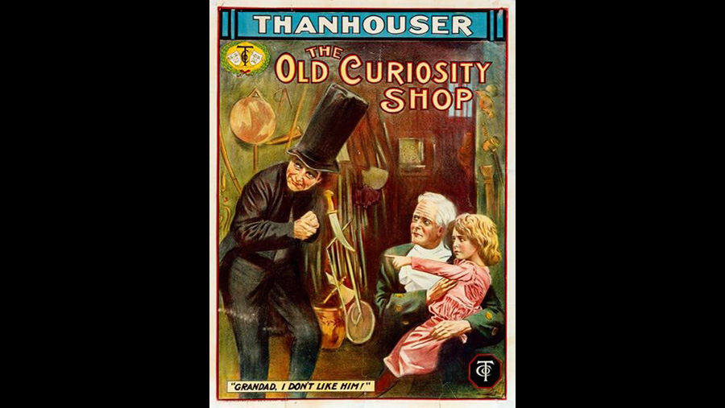

1911

CAST
Little Nell
-
Marie Eline
Grandfather Trent
-
Frank H. Crane
Also in the cast were:
Harry Benham
Marguerite Snow
Alphonse Ethier
William Bowman
CREATIVE TEAM
Director
-
Barry O'Neil
Screenplay
-
Uncredited
PRODUCTION
A 1911 American silent short drama film produced by the Thanhouser Company. The film is an adaptation that was limited to the time constrictions of the single reel format. The film focuses on the grandfather who gambles into poverty and the consequences which eventually claim the life of Little Nell. In 2012, the work was confirmed to be a Thanhouser production at the Pordenone Silent Film Festival. The original identification of the film as Little Nell arose due to head of the film having been lost.